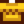

Wild Horseradish
Jump to navigation
Jump to search
| Wild Horseradish | |||||||||||||||||
| A spicy root found in the spring. | |||||||||||||||||
| Information | |||||||||||||||||
| Source | Foraging • Spring Seeds | ||||||||||||||||
| Season | |||||||||||||||||
| XP | 7 Foraging XP | ||||||||||||||||
| Energy / Health |
|
||||||||||||||||
| Sell Price |
|
||||||||||||||||
Wild Horseradish is found via foraging in the Spring, or grown from Spring Seeds. Putting a Wild Horseradish in a Seed Maker will generate 1-3 Spring Seeds.
Gifting
| Villager Reactions
| |
|---|---|
| Love | |
| Like | |
| Neutral | |
| Dislike | |
| Hate | |
Bundles
Wild Horseradish is used in the  Spring Foraging Bundle in the Crafts Room.
Spring Foraging Bundle in the Crafts Room.
Recipes
Cooking
| Image | Name | Description | Ingredients | Energy / Health | Buff(s) | Buff Duration | Recipe Source(s) | Sell Price | |||
|---|---|---|---|---|---|---|---|---|---|---|---|
| Shrimp Cocktail | A sumptuous appetizer made with freshly-caught shrimp. |
|
Crafting
| Image | Name | Description | Ingredients | Recipe Source | Sell Price |
|---|---|---|---|---|---|
| Wild Seeds (Sp) | An assortment of wild spring seeds. (Produces 10 Spring Seeds per craft.) |
Tailoring
Wild Horseradish is used in the spool of the Sewing Machine with Cloth in the feed to create a  "Good Grief" Shirt. It is a brown dye when used in the spool of the Sewing Machine with a dyeable clothing item in the feed. It can be placed in the orange dye pot at Emily's and Haley's house for use in dyeing.
Quests
- Wild Horseradish may be randomly requested during Spring at the "Help Wanted" board outside Pierre's General Store for a reward of
 150g and 150 Friendship points.
150g and 150 Friendship points.
History
- 1.4: Can now be used in Tailoring. Added Shrimp Cocktail recipe.
- 1.6: Caroline now likes wild horseradish.
| Foraging | |
|---|---|
| Basic | Sap |
| Spring | Common Mushroom • Daffodil • Dandelion • Leek • Morel • Salmonberry • Spring Onion • Wild Horseradish |
| Summer | Fiddlehead Fern • Grape • Red Mushroom • Spice Berry • Sweet Pea |
| Fall | Blackberry • Chanterelle • Common Mushroom • Hazelnut • Wild Plum |
| Winter | Crocus • Crystal Fruit • Holly • Snow Yam • Winter Root |
| The Beach | Clam • Cockle • Coral • Mussel • Nautilus Shell • Oyster • Rainbow Shell • Sea Urchin • Seaweed |
| The Mines | Cave Carrot • Purple Mushroom • Red Mushroom |
| The Desert | Cactus Fruit • Coconut |
| Skull Cavern | Dinosaur Egg • Fiddlehead Fern |
| Ginger Island | Ginger • Magma Cap |